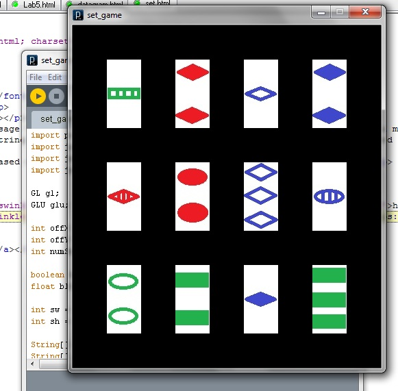

Set Project:
The Set project involved two parts. The first part was to create a solver that could detect all the sets in a group of cards given. The second part was to create a graphical interface to play a game of Set
The Set solver used a brute force method to check that each possible group of cards is either a set or not a set. Nested loops were used to determine equality or inequality. It begins with the first second and third cards selecter, and moves the third card down all possible cards. Then the second card is moved down and the process repeats. A class called EqorDIFF is called from the loops to determine if the three cards can be used as a set. To improve on the absolute brute force method, the code was optimized sot that fewer checks were needed to determine if any three cards formed a set.
The Set game was made in processing and dislays a random selection of cards made in MS Paint. OPENGL picking is used to allow the player to select cards. After three cards are selected, the game will determine if the three form a set using the EQorDIFF method. The player is then told if the cards are a set or not a set.
Because the Set game interface was just made in processing, it should be able to be run on any computer with Processing.
DOWNLOADS:
Set solver:https://github.com/gateswinkler/201B-Processing-Sketches-GatesWinkler/tree/master/set_project
Set game:https://github.com/gateswinkler/201B-Processing-Sketches-GatesWinkler/tree/master/set_game